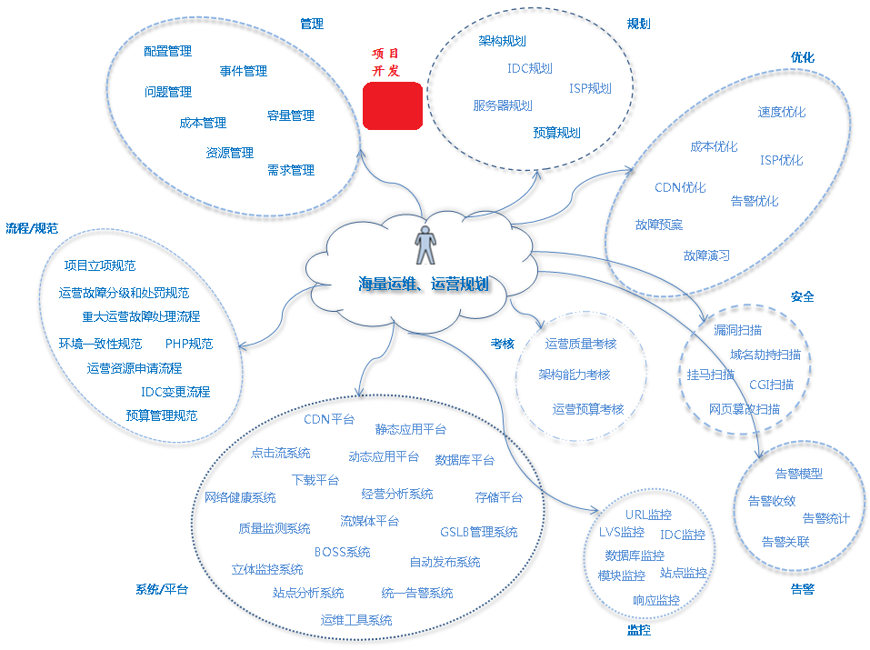

第1章 运维简介及企业中的那些事

1 为什么要学习shell以及简单运维知识
- 技能提升
- 面试考点
2 以天天生鲜项目为例
- 规划：我们需要多少资源来支持项目的运行
- 管理：项目运行过程中的所有内容都管理起来
- 流程规范：所有操作都形成制度，提高工作效率
- 平台：大幅度提高工作效率
- 监控：实时查看项目运行状态指标
- 告警：状态指标异常，告知工作人员处理
- 安全：网站运营安全措施
- 优化：保证用户访问网站体验很好
2.1 自动化运维：就是将图里面所有的工作都使用自动化的方式来实现。
实现自动化的方式很多，常见的方式：工具和脚本。
工作中常见的脚本是shell脚本 和 其他开发语言脚本
shell脚本就是shell编程的一种具体实现
3 企业中的技术岗位
- 产品岗位----根据用户需求设计产品，规划处相应功能
- 开发岗位----根据产品岗位需要的功能，通过技术手段实现功能
- 测试岗位----根据相关文档，对实现出来的产品或应用进行过反复测试
- 运维岗位----将项目部署上线，并且持续运行维护
4 程序员的职业发展规划